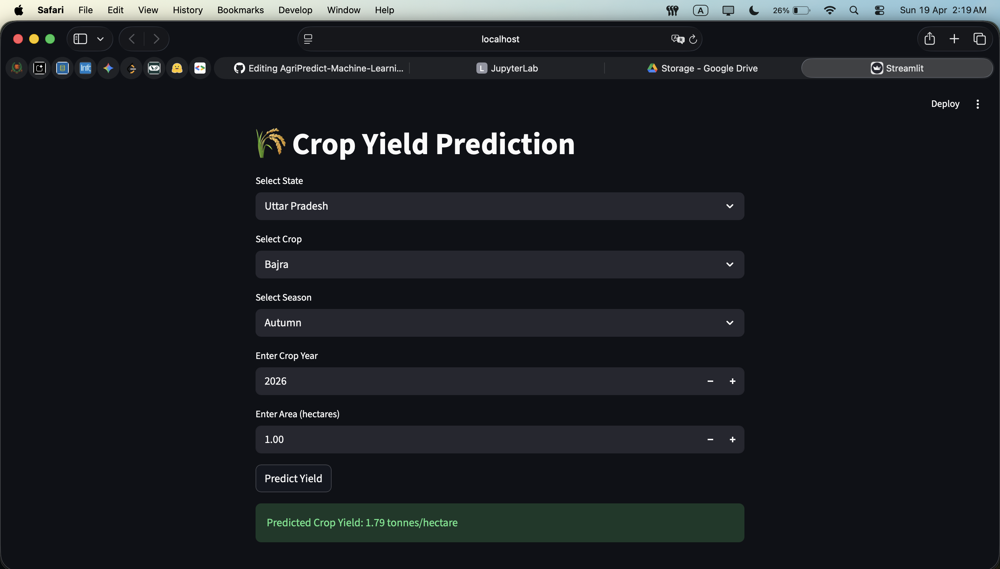

The Social Impact Lead
AgriPredict
A Machine Learning-based forecasting system designed to support food security.
The Problem
Uncertainty in crop yields due to unpredictable climate and complex soil variables.
Technical Solution
Processed massive environmental datasets utilizing advanced ensemble methods to achieve high-accuracy yield forecasts, empowering farmers to make data-driven planting decisions.
Python
Machine Learning
Math